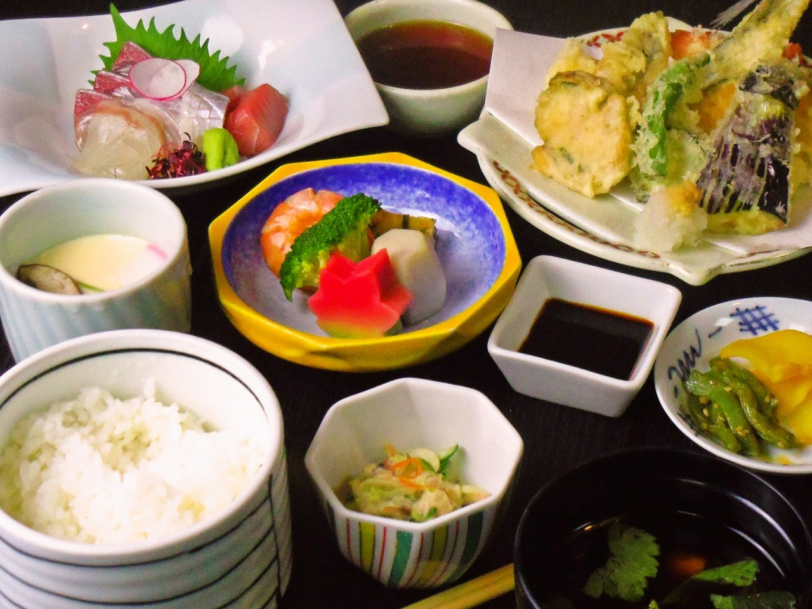
| 営業時間 | 月・火・木〜土・祝前日 11:30〜14:00／18:00〜20:30(料理L.O. 20:00)、日・祝 11:30〜14:00(料理L.O. 14:00)／18:00〜20:30(料理L.O. 20:00) |
|---|---|
| 定休日 | 水曜(水曜が祝日のときは木曜が臨時休業)。ほかに月1〜2回の臨時休業あり |
| 住所 | 広島県福山市鞆町鞆150-12 |
| 予約 | 可(鯛づくし膳・会席は要予約。会席は来店3日前の21時まで) — ☎ 084-983-5330 |
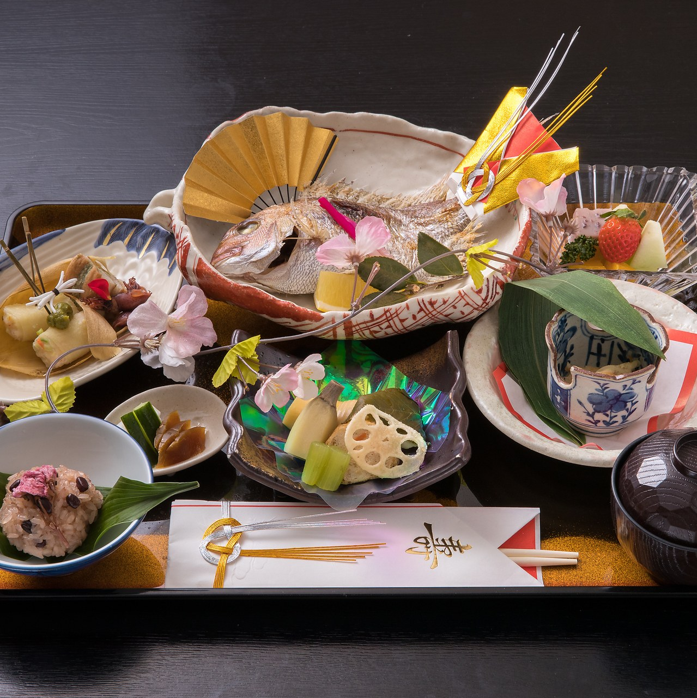
| 営業時間 | 昼 11:30〜14:30(L.O. 14:30)／夜 17:00〜22:00(L.O. 21:30)※昼の宴会は完全予約制 |
|---|---|
| 定休日 | 不定休(前日までの予約には対応) |
| 住所 | 広島県福山市元町13-26 |
| 予約 | 可(うずみ定食などの昼の御膳・会席は要予約) — ☎ 084-932-3336 ／ 公式サイト |
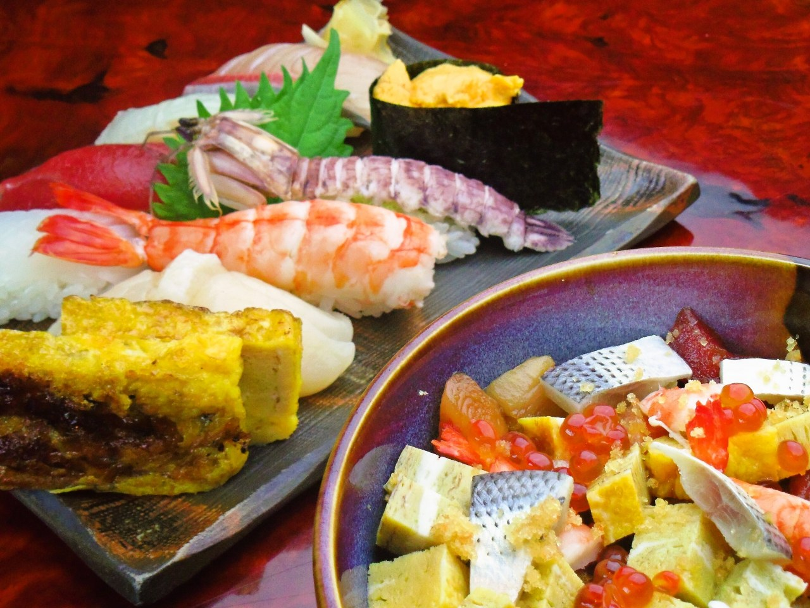
| 営業時間 | 月・火・木〜日・祝・祝前日 11:30〜13:00／17:00〜23:00 ※昼の営業は不定期なので来店前に要問い合わせ |
|---|---|
| 定休日 | 水曜 |
| 住所 | 広島県福山市神辺町西中条1268 |
| 予約 | 可(コースは来店2日前の0時まで) — ☎ 084-962-2911 |
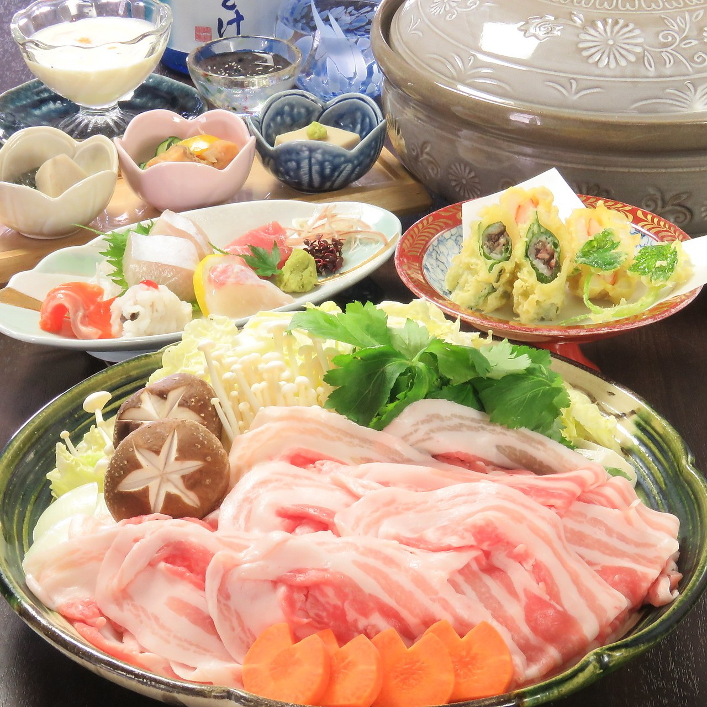
| 営業時間 | 月・火・木〜日・祝・祝前日 11:30〜14:00(料理L.O. 13:30／ドリンクL.O. 13:00)／17:30〜22:00(料理・ドリンクL.O. 21:00)。12/30〜1/3は昼の御膳を休み、3,300円の夕膳からの予約のみ(正月料金20%増) |
|---|---|
| 定休日 | 水曜、ほかに不定休 |
| 住所 | 広島県福山市霞町1-8-3 |
| 予約 | 可(会席コースは来店の前日〜2日前22時まで。ネット予約可) — ☎ 084-999-3539 |
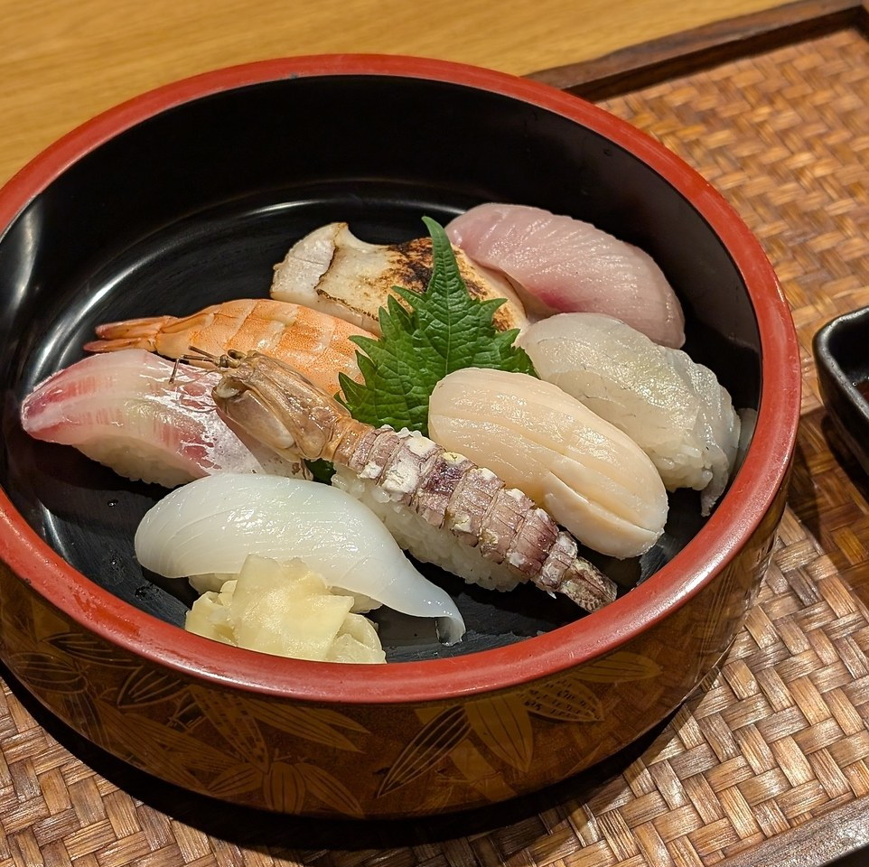
| 営業時間 | 月・水〜日・祝・祝前日 11:00〜14:00(料理L.O. 13:30／ドリンクL.O. 13:30)／17:00〜22:00(料理・ドリンクL.O. 21:30) |
|---|---|
| 定休日 | 火曜 |
| 住所 | 広島県福山市伏見町1-18 |
| 予約 | 可(宴会コースは来店前日17時まで。ネット予約可。15〜20名で店舗貸切も可) — ☎ 084-999-2899 |
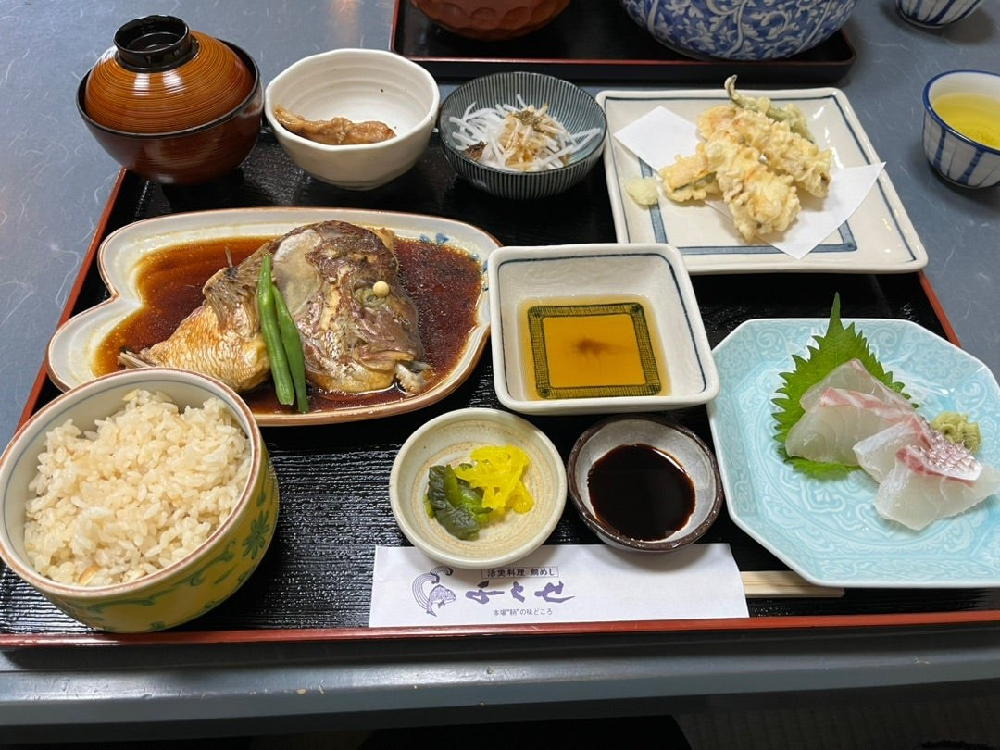
| 営業時間 | 月・水・木・金・土・日 11:30〜15:00(L.O. 14:30)／18:00〜21:00(L.O. 20:30) |
|---|---|
| 定休日 | 火曜(祝日の場合は木曜) |
| 住所 | 広島県福山市鞆町鞆552-7 |
| 予約 | 可(会席・鯛づくしは要予約。鯛めしは売り切れ次第終了のため予約が無難) — ☎ 084-982-3165 |
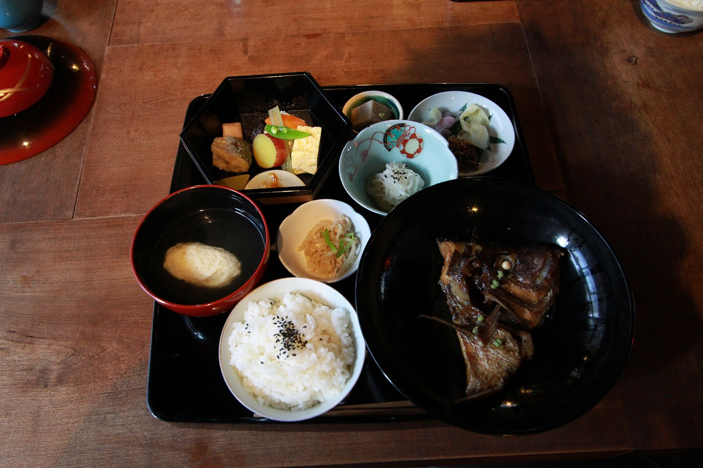
| 営業時間 | 水〜日・祝・祝前日 11:30〜13:30(ホットペッパー掲載。マップルは11:00〜14:00と記載しており、来店前に電話で確認するのが確実) |
|---|---|
| 定休日 | 月曜・火曜 |
| 住所 | 広島県福山市鞆町鞆670 |
| 予約 | 可(ペット同伴は要相談) — ☎ 084-982-1920 |
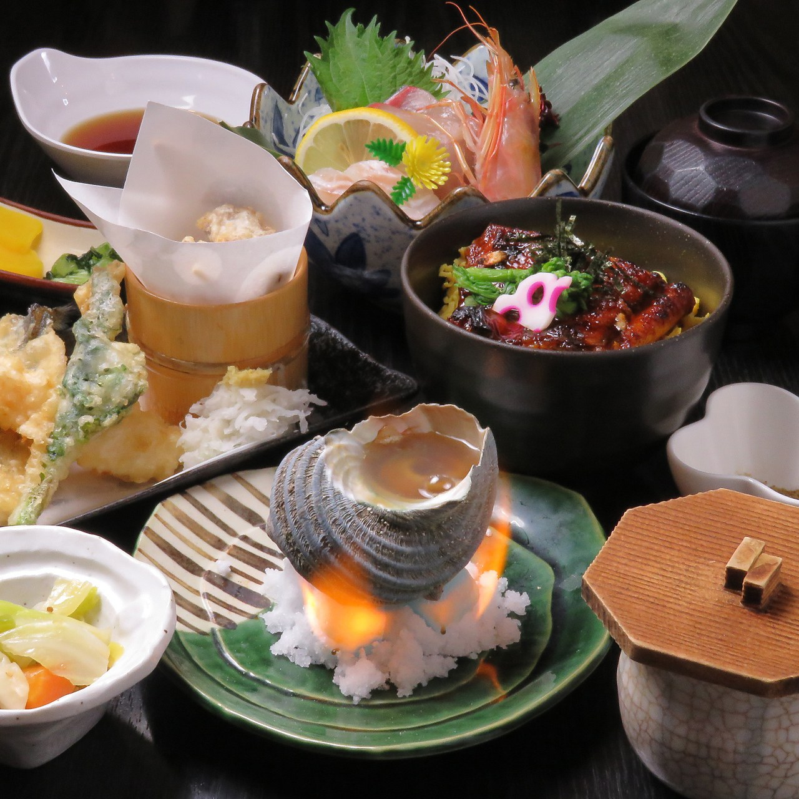
| 営業時間 | 月・水〜日 11:00〜15:00(料理・ドリンクL.O. 14:30)／17:30〜20:30(料理・ドリンクL.O. 20:00)。弁当・総菜の受付は11:00〜18:00 |
|---|---|
| 定休日 | 火曜、第2・第4木曜(祝日などで変更あり) |
| 住所 | 広島県福山市東川口町3-18-18 |
| 予約 | 可(宴会コースは来店3日前17時まで。ネット予約可) — ☎ 084-981-3333 |
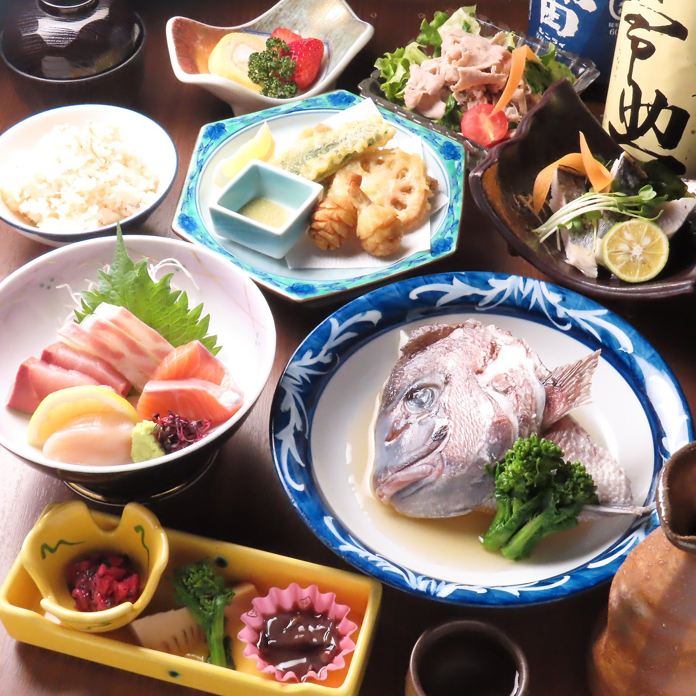
| 営業時間 | 火〜日 11:00〜14:00(料理・ドリンクL.O. 13:30)／17:00〜22:30(料理L.O. 22:00／ドリンクL.O. 22:00)、祝日・祝前日 11:30〜14:00(料理・ドリンクL.O. 13:30) |
|---|---|
| 定休日 | 月曜(連休時は前後することあり) |
| 住所 | 広島県福山市元町13-21 宮通りビル1F |
| 予約 | 可(ネット予約可。個室・貸切は要予約) — ☎ 084-928-5465 ／ 公式サイト |
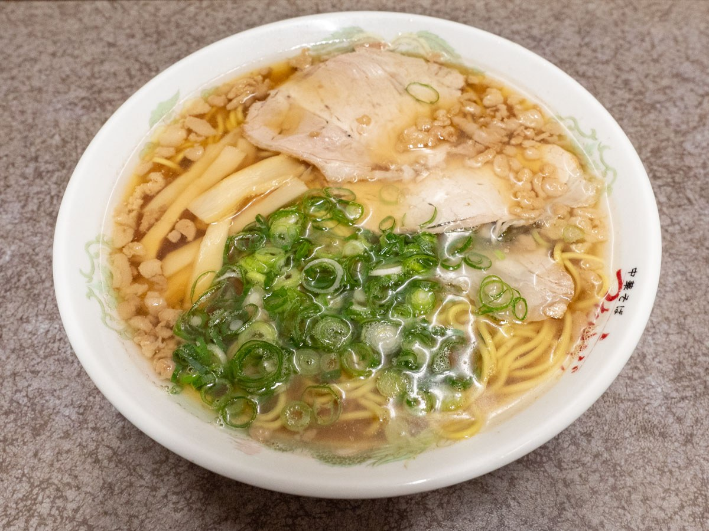
| 営業時間 | 11:00〜21:30(日・祝は21:00まで) |
|---|---|
| 定休日 | 火曜(祝日の場合は営業し、翌日休業) |
| 住所 | 広島県福山市御門町2丁目9-1 |
| 予約 | 不可 — ☎ 084-924-2815 ／ 公式サイト |
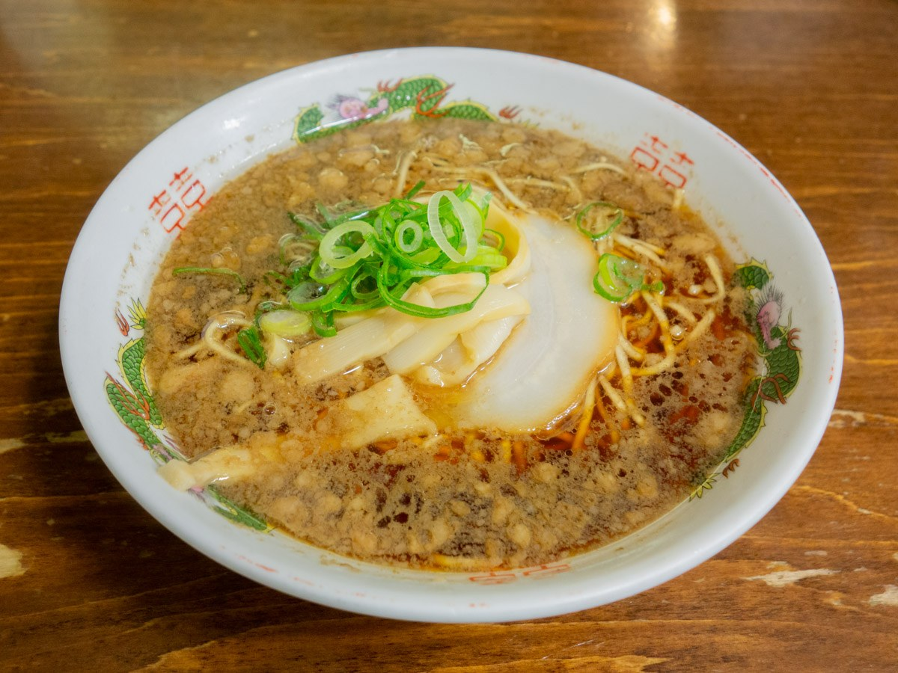
| 営業時間 | 11:00〜22:00 |
|---|---|
| 定休日 | 木曜・第3日曜 |
| 住所 | 広島県福山市三之丸町3-7 土井ビル1階 |
| 予約 | 不可 — ☎ 084-928-5280 ／ 公式サイト |
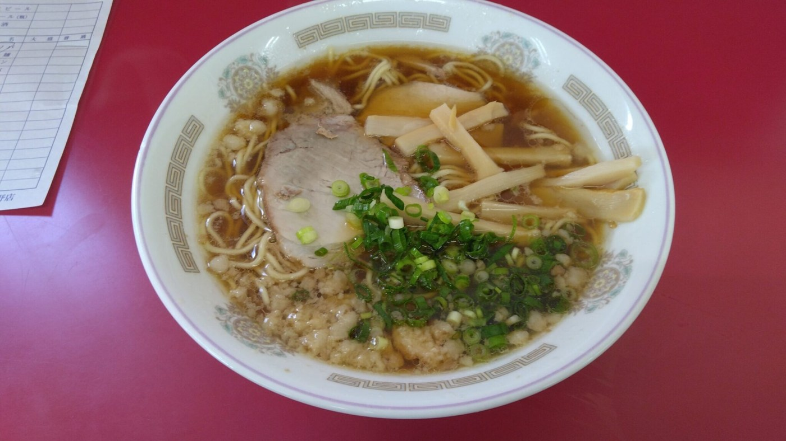
| 営業時間 | 11:00〜23:00(通し営業) |
|---|---|
| 定休日 | 月曜(月曜が祝日の場合は営業し、翌火曜休業) |
| 住所 | 広島県福山市引野町4丁目6-24 |
| 予約 | 不可 — ☎ 084-941-8918 |
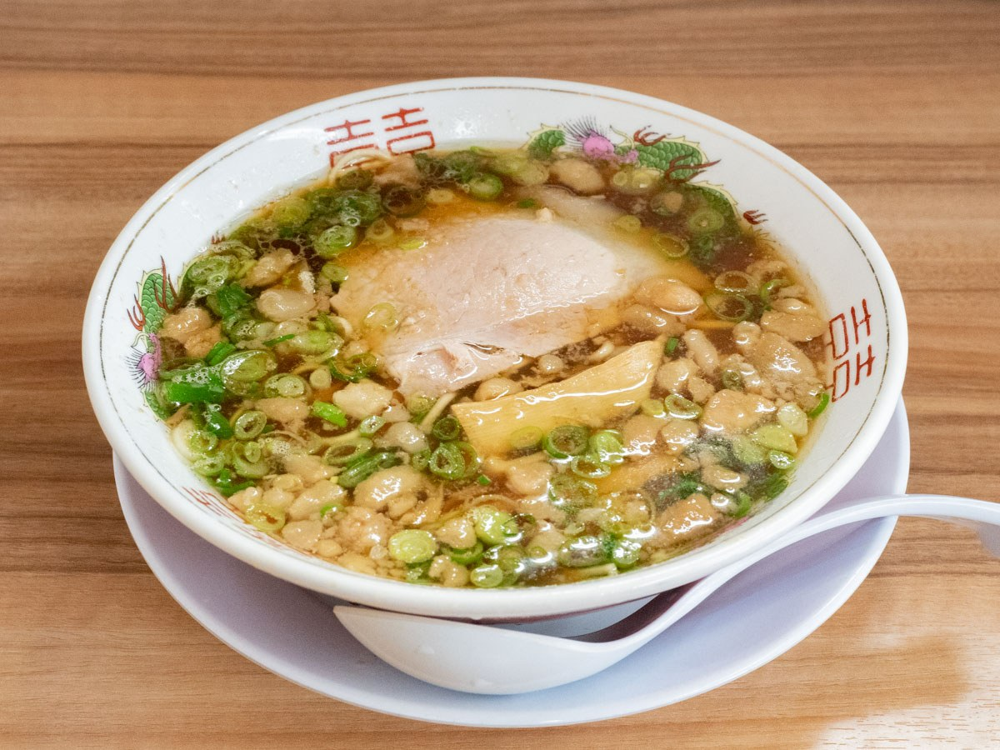
| 営業時間 | 11:00〜20:00(通し営業・スープがなくなり次第終了) |
|---|---|
| 定休日 | 木曜・第3水曜(10月以降は水・木休とする情報もあり) |
| 住所 | 広島県福山市神辺町十九軒屋253-2 サンキューランド内 |
| 予約 | 不可 — ☎ 084-966-3525 |
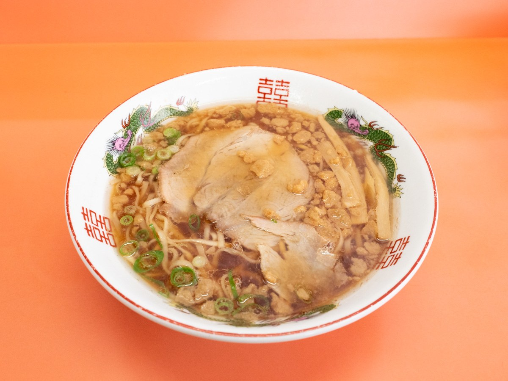
| 営業時間 | 11:00〜18:00(スープがなくなり次第終了) |
|---|---|
| 定休日 | 木曜 |
| 住所 | 広島県福山市川口町2丁目10-50 |
| 予約 | 不可 — ☎ 084-953-6335 |
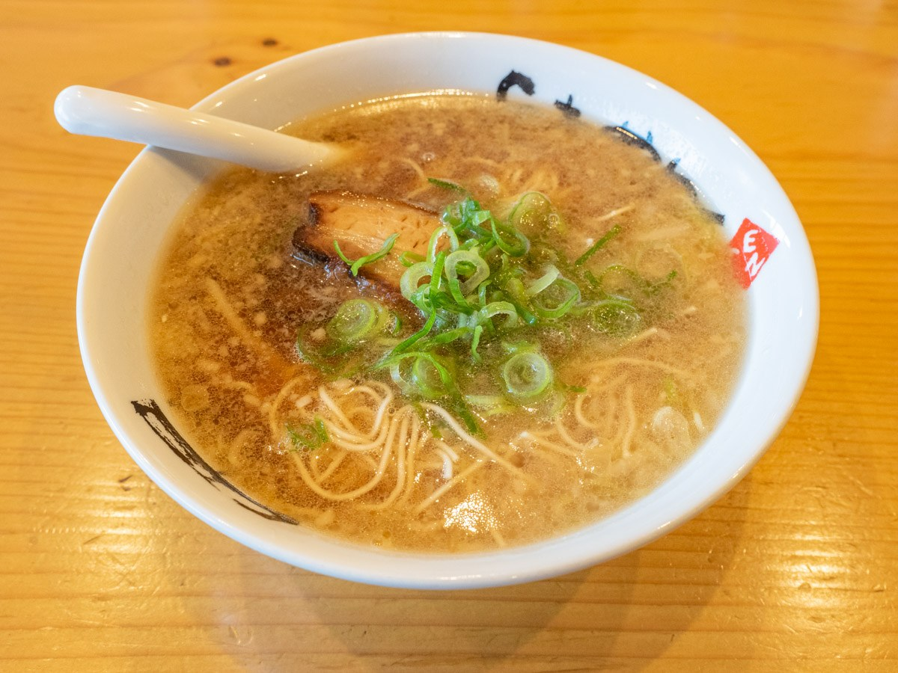
| 営業時間 | 火〜金 11:30〜15:00／18:00〜20:30、土・日・祝 11:30〜20:30(通し) |
|---|---|
| 定休日 | 月曜 |
| 住所 | 広島県福山市松永町7丁目3-3 |
| 予約 | 不可 — ☎ 084-934-8662 |
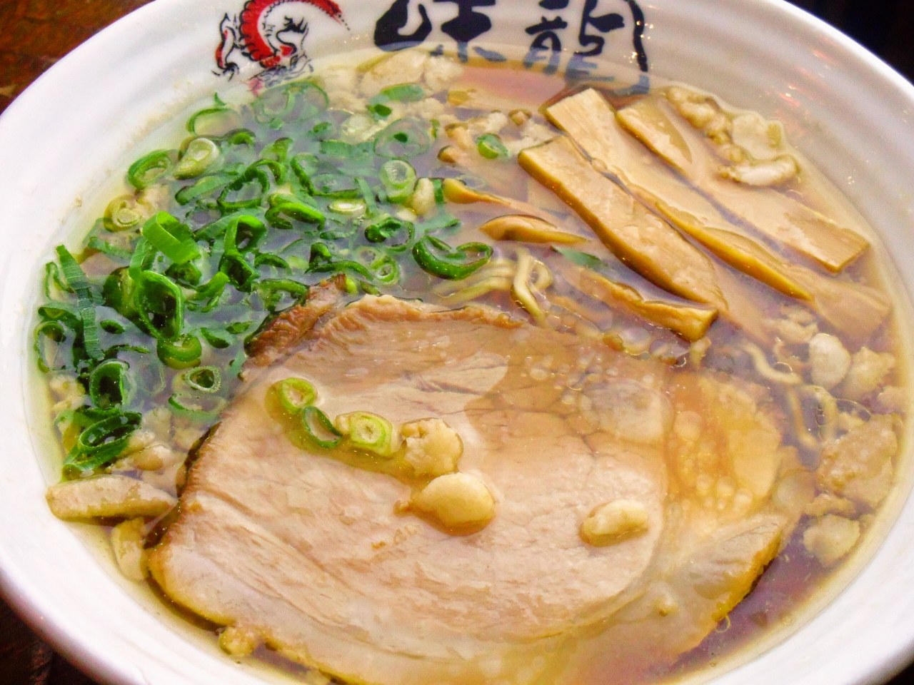
| 営業時間 | 11:00〜23:00(料理・ドリンクともL.O.22:30) |
|---|---|
| 定休日 | なし(無休) |
| 住所 | 広島県福山市箕島町5816-222 |
| 予約 | 一部可 — ☎ 084-954-8856 |
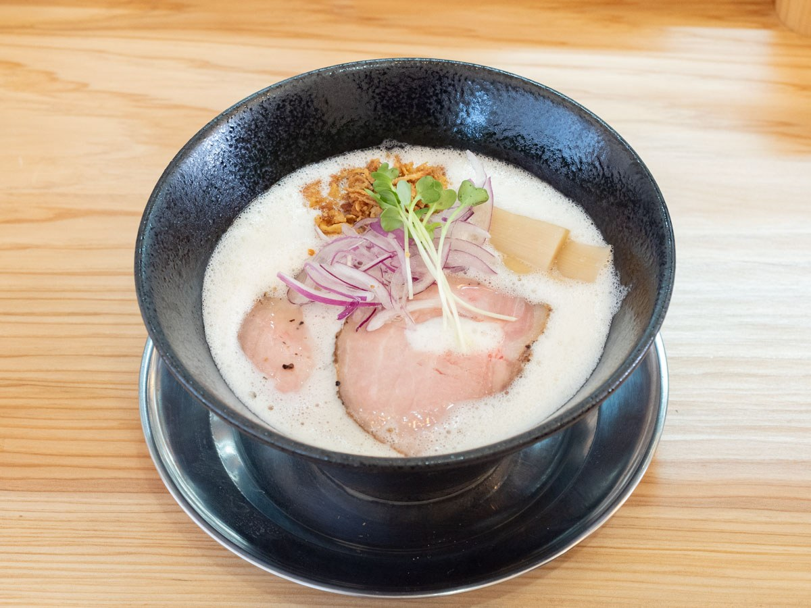
| 営業時間 | 火・水・木・日 11:00〜15:00(L.O.14:30)／金・土 17:30〜20:30(L.O.20:00) ※スープがなくなり次第終了 |
|---|---|
| 定休日 | 月曜(ほか不定休) |
| 住所 | 広島県福山市草戸町4丁目10-3 |
| 予約 | 不可 — 公式サイト |
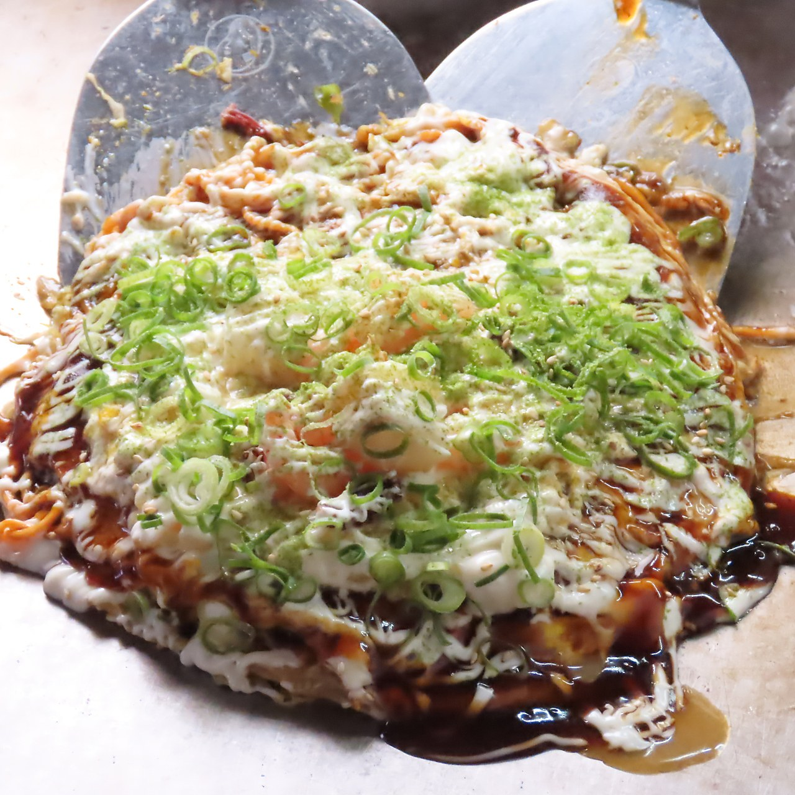
| 営業時間 | 18:00〜翌0:00(料理・ドリンクともL.O. 23:30) |
|---|---|
| 定休日 | 日曜 |
| 住所 | 広島県福山市南町1-18 |
| 予約 | 可(ネット予約・当日22時まで) — ☎ 084-923-8733 |
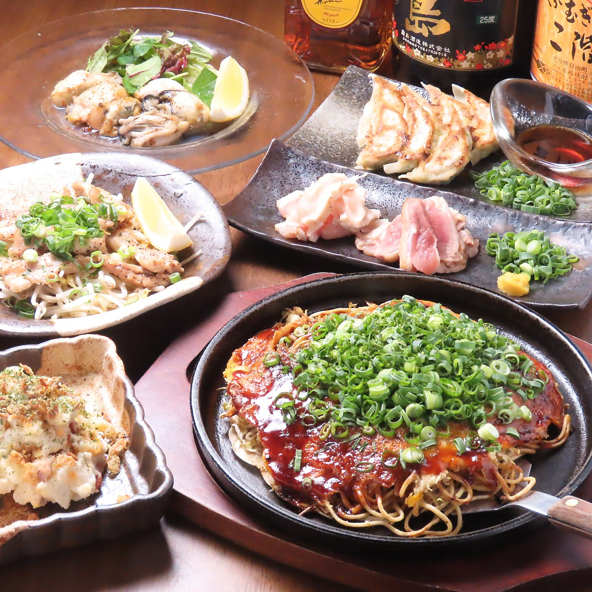
| 営業時間 | 17:00〜23:00(料理L.O. 22:30 ドリンクL.O. 22:30) |
|---|---|
| 定休日 | 日曜 |
| 住所 | 広島県福山市城見町1丁目3-41 |
| 予約 | 可 — ☎ 084-926-1045 |
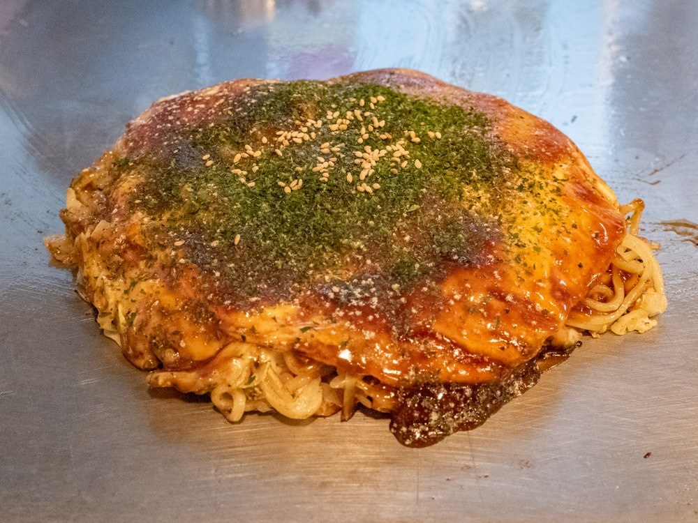
| 営業時間 | 17:30〜23:00(L.O. 22:00) |
|---|---|
| 定休日 | 日曜(日曜を含む連休の場合は日曜に営業し、連休最終日に休業) |
| 住所 | 広島県福山市船町4-6 |
| 予約 | 可(19時までの来店に限る) — ☎ 084-922-0526 |
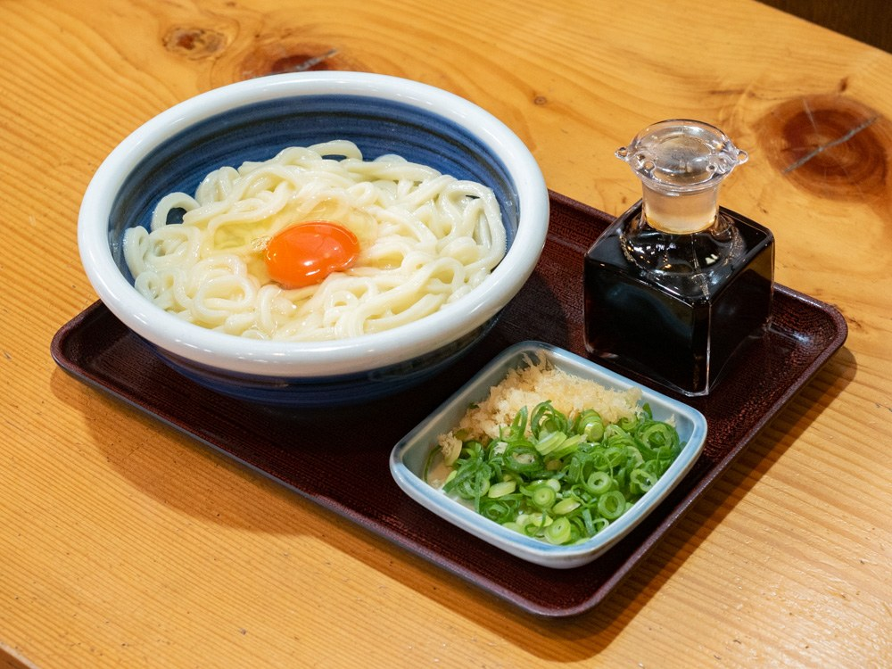
| 営業時間 | 11:30〜15:00(ラストオーダー 14:30)※麺が無くなり次第終了 |
|---|---|
| 定休日 | 水曜・金曜(2026年10月から金曜が休みに加わった) |
| 住所 | 広島県福山市王子町2-15-1 |
| 予約 | 不可(持ち帰りのみ電話予約可) — ☎ 084-924-1410 ／ 公式サイト |
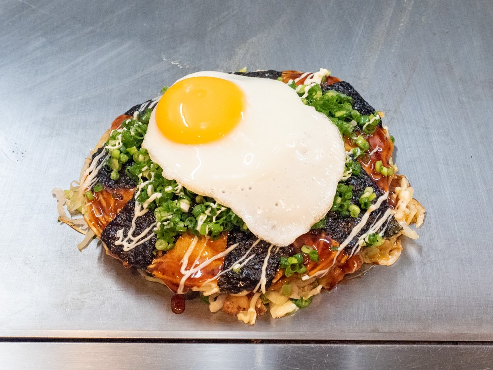
| 営業時間 | 木〜火 11:30〜14:00(L.O. 13:30)、17:30〜22:30(L.O. 22:00)／日曜 17:00〜21:30(L.O. 21:00)※材料が無くなり次第終了 |
|---|---|
| 定休日 | 水曜、第1・3・5木曜 |
| 住所 | 広島県福山市伏見町3-25 |
| 予約 | 可 — ☎ 050-8884-3852 ／ 公式サイト |
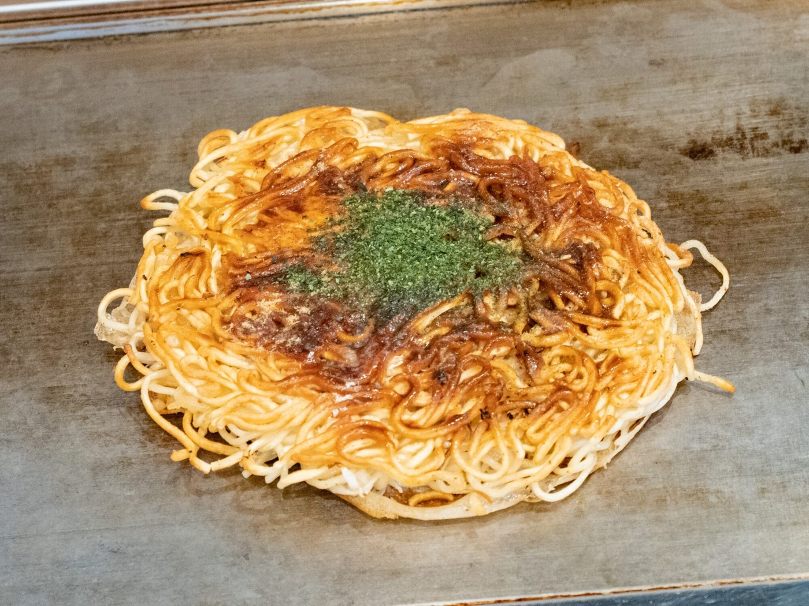
| 営業時間 | 平日 11:15〜14:30(L.O.)／17:15〜21:30(L.O.、22:00閉店)、土日祝 11:00〜14:30(L.O.)／17:00〜21:30(L.O.、22:00閉店)。麺の仕入れ日(月曜が多い)は昼の部が短くなる |
|---|---|
| 定休日 | 木曜 |
| 住所 | 広島県福山市本庄町中2-6-33 |
| 予約 | 可 — ☎ 084-999-7622 |
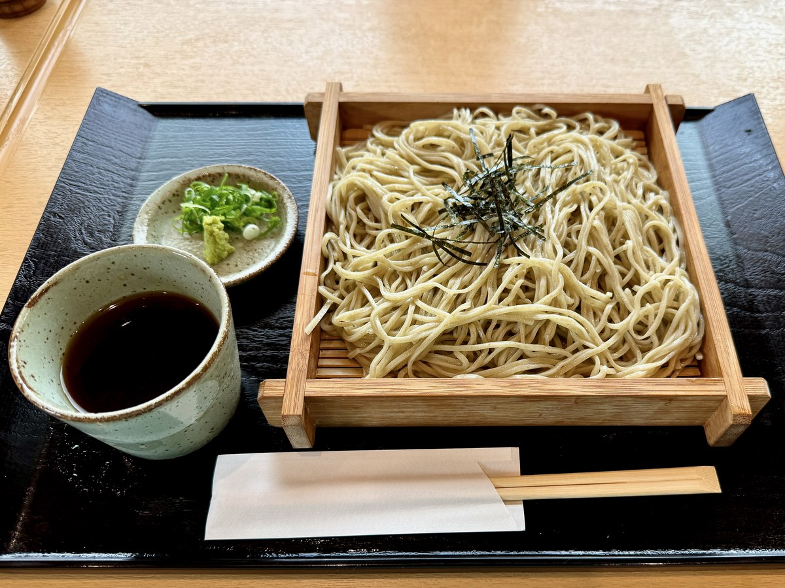
| 営業時間 | 昼 11:00〜14:00／夜 17:00〜21:00(ラストオーダー 20:30頃) |
|---|---|
| 定休日 | 水曜、および火曜の夜 |
| 住所 | 広島県福山市西深津町4-7-26 |
| 予約 | 未確認 — ☎ 084-921-9058 |
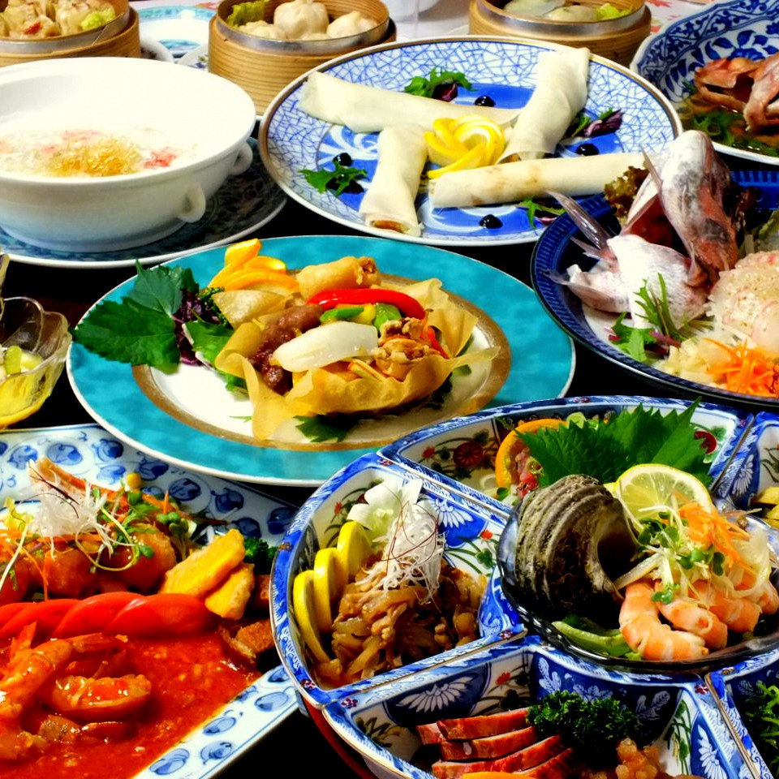
| 営業時間 | 11:00〜14:30(料理L.O. 14:00)、17:00〜21:30(料理L.O. 21:00) |
|---|---|
| 定休日 | 木曜(祝日の場合は要問い合わせ) |
| 住所 | 広島県福山市春日町1-2-48 |
| 予約 | 可 — ☎ 084-943-0010 ／ 公式サイト |
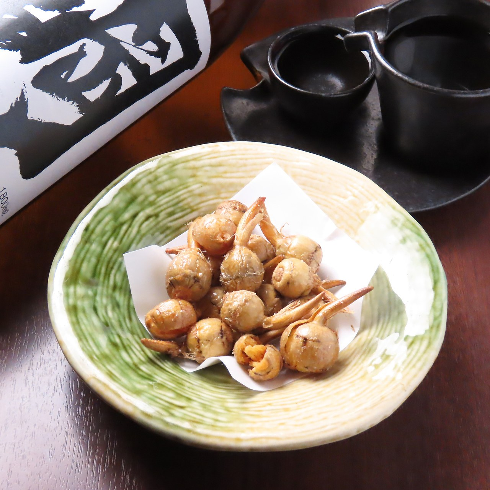
| 営業時間 | 月〜日・祝日・祝前日 12:00〜23:00（料理L.O. 22:30／ドリンクL.O. 22:30） |
|---|---|
| 定休日 | 不定休 |
| 住所 | 広島県福山市元町8-2 |
| 予約 | 可（ネット予約可） — ☎ 070-2023-0859 |
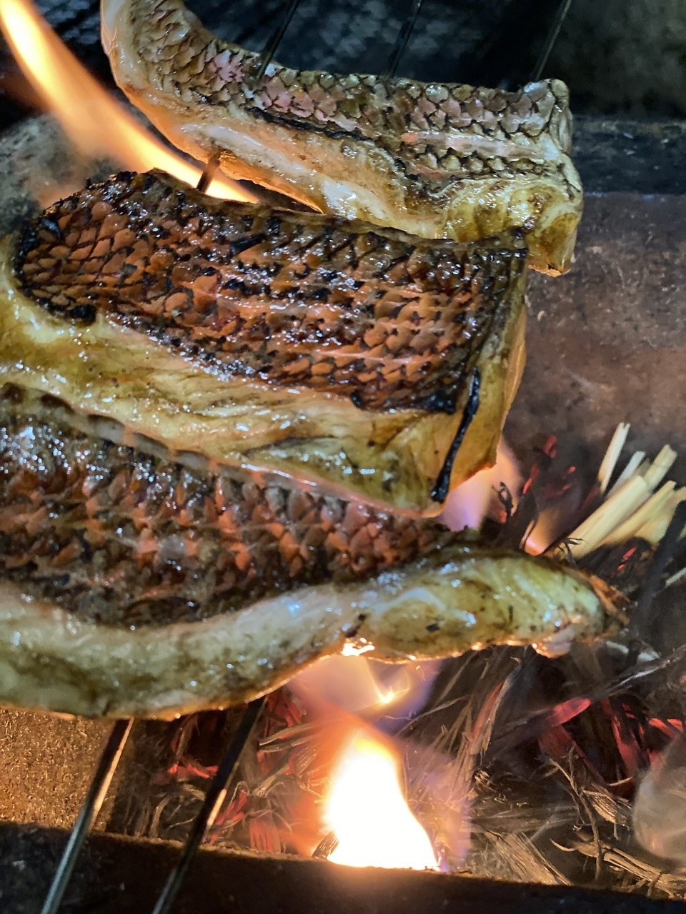
| 営業時間 | 火〜土・祝前日 17:30〜23:00（料理L.O. 22:30／ドリンクL.O. 22:30）／日・祝日 17:30〜22:30（料理L.O. 22:00／ドリンクL.O. 22:00） |
|---|---|
| 定休日 | 月曜（年末年始12/30〜1/3は営業） |
| 住所 | 広島県福山市元町13-12 エスビル2F |
| 予約 | 可（ネット予約可。真鯛の藁焼きは予約推奨） — ☎ 084-925-3780 |
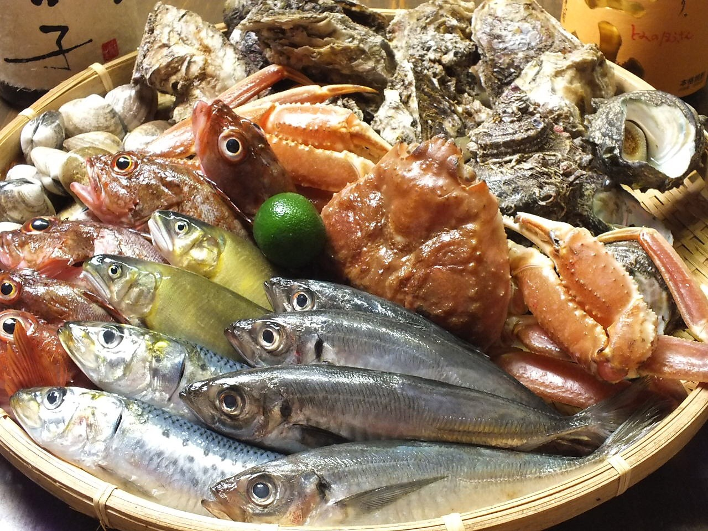
| 営業時間 | 月〜日・祝日・祝前日 17:00〜23:30（料理L.O. 23:00／ドリンクL.O. 23:00） |
|---|---|
| 定休日 | 不定休 |
| 住所 | 広島県福山市伏見町3-21 |
| 予約 | 可（ネット予約可） |
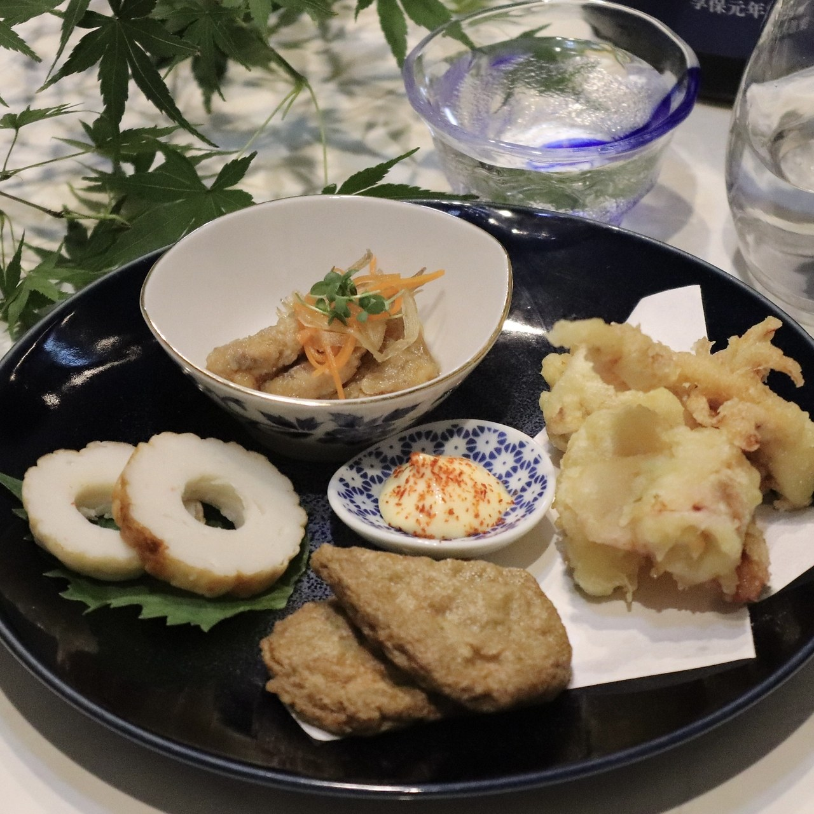
| 営業時間 | 火〜金・祝前日 17:00〜22:00（料理L.O. 21:00／ドリンクL.O. 21:30・最終入店20:30）／土 11:30〜14:00（料理L.O. 13:30）と17:00〜22:00 |
|---|---|
| 定休日 | 月曜・日曜・祝日（月曜は15名以上の宴会予約なら営業可） |
| 住所 | 広島県福山市今町30-1 A区画 |
| 予約 | 可（ネット予約可。席の利用は2時間半） — ☎ 084-921-7456 |
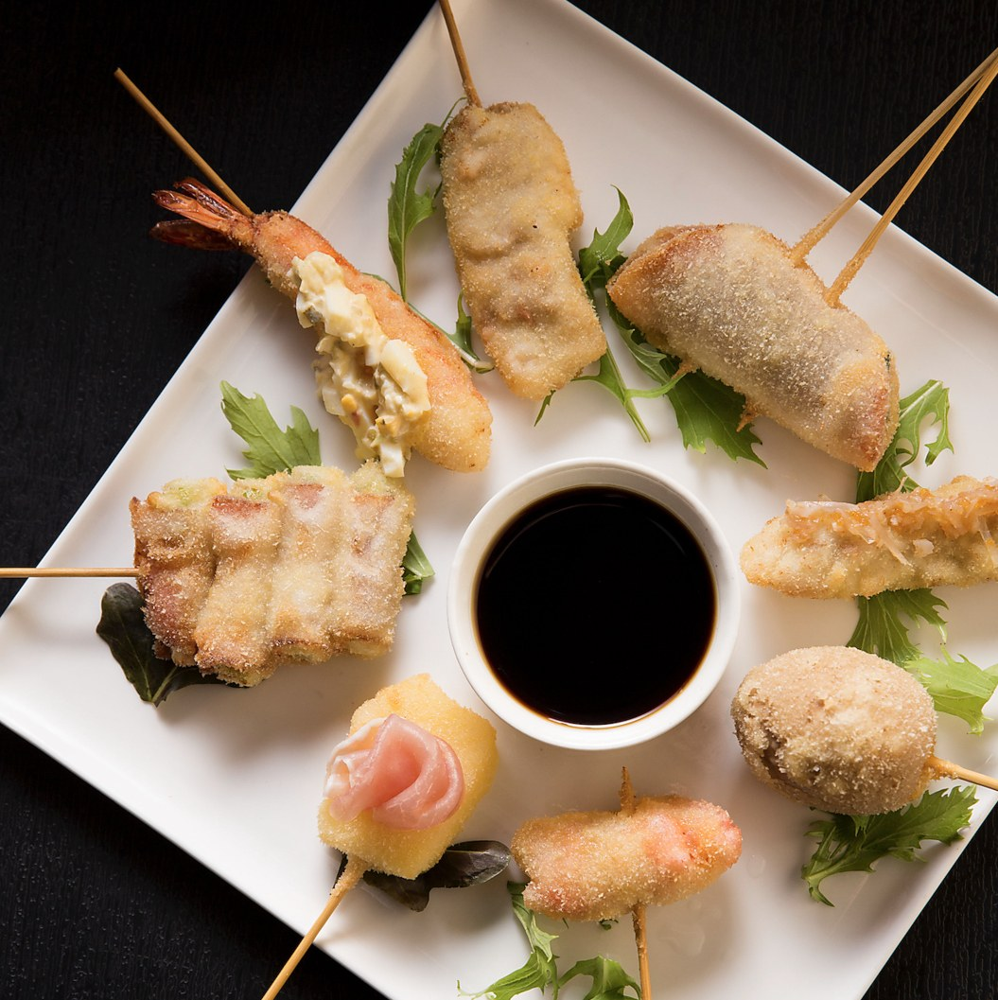
| 営業時間 | 月〜土・祝日・祝前日 11:00〜翌0:00（料理L.O. 23:30／ドリンクL.O. 23:30）／日 11:00〜22:00（料理L.O. 21:30／ドリンクL.O. 21:30） |
|---|---|
| 定休日 | 不定休 |
| 住所 | 広島県福山市伏見町1-1 |
| 予約 | 一部可（1階の立ち飲みは予約不要。2階の個室はネット予約可） — ☎ 084-931-5518 |
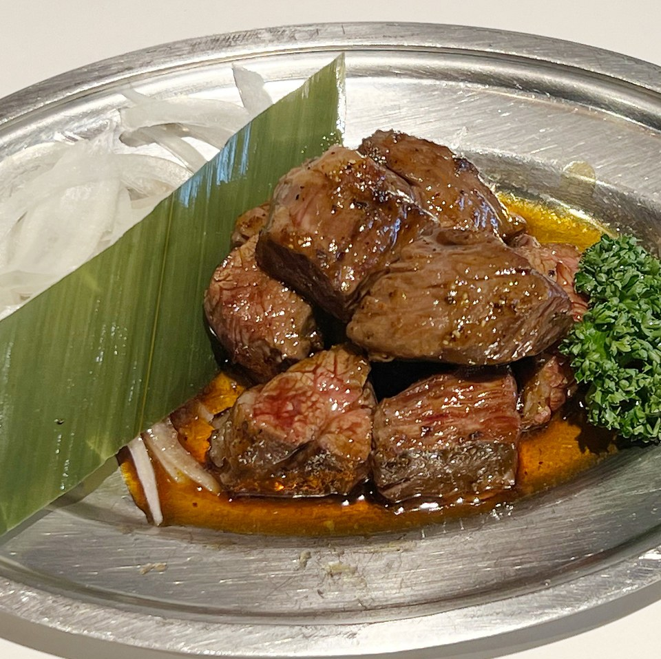
| 営業時間 | 火〜土・祝日・祝前日 17:00〜翌0:00（料理L.O. 23:00／ドリンクL.O. 23:00） |
|---|---|
| 定休日 | 月曜・日曜 |
| 住所 | 広島県福山市伏見町4-5 |
| 予約 | 可（ネット予約可） — ☎ 084-982-5933 |
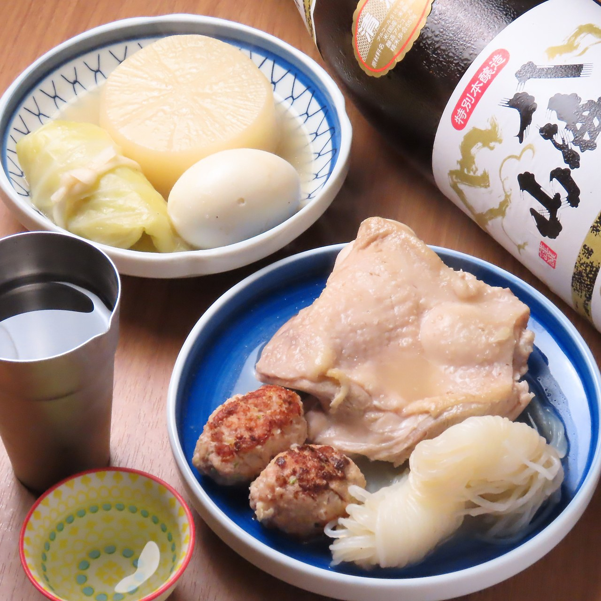
| 営業時間 | 月〜木・日・祝日 15:00〜23:30（料理L.O. 23:00／ドリンクL.O. 23:00）／金・土・祝前日 15:00〜翌4:00（料理L.O. 23:00／ドリンクL.O. 翌4:00） |
|---|---|
| 定休日 | 無休と思われるが未確認（掲載ページに定休日の記載なし。予約カレンダーにも休業日の表示なし） |
| 住所 | 広島県福山市神辺町十三軒屋11-1 |
| 予約 | 可（ネット予約可。20歳未満は入店不可） — ☎ 084-963-6066 |
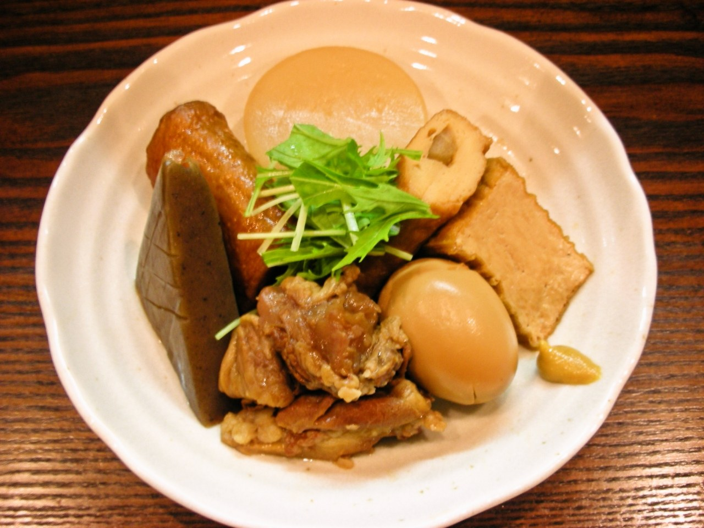
| 営業時間 | 火〜土 11:30〜14:00（料理L.O. 13:15／ドリンクL.O. 13:15）と18:00〜22:00（料理L.O. 21:00／ドリンクL.O. 21:00・最終来店20:00） |
|---|---|
| 定休日 | 月曜・日曜（ほかに不定休あり） |
| 住所 | 広島県福山市大門町4-21-36 |
| 予約 | 可（ネット予約可。おまかせの会席コースは3日前までに予約） — ☎ 084-983-0960 |
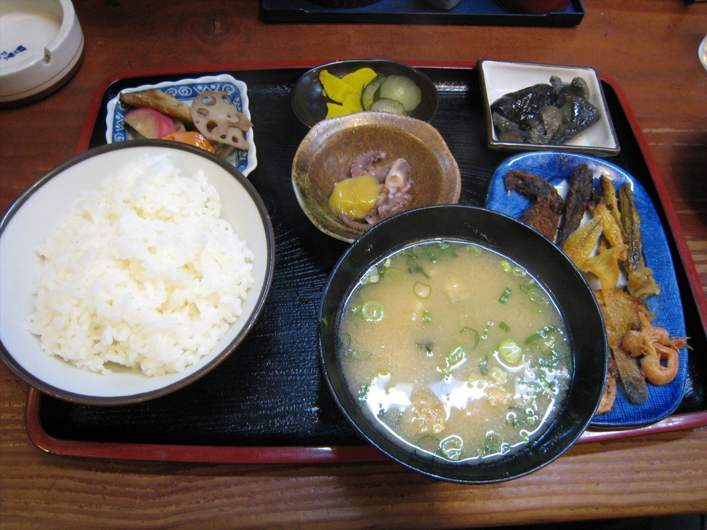
| 営業時間 | 11:00〜14:00（料理L.O. 13:45）／17:00〜21:00（料理L.O. 20:30）※15時〜17時は閉店。夜の営業は火〜土 |
|---|---|
| 定休日 | 月曜・第3日曜 |
| 住所 | 広島県福山市鞆町鞆838 |
| 予約 | 不要（席の予約は電話で相談） — ☎ 084-982-0808 |
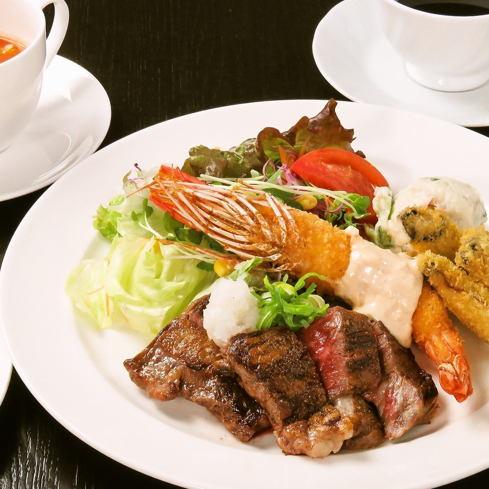
| 営業時間 | 月・火・木・日 11:30〜14:30(料理L.O.14:00、ランチL.O.は13:50)／金・土 11:30〜14:30(料理L.O.14:00)、17:30〜20:00(料理L.O.18:30、ドリンクL.O.18:30)。夜の営業は金曜・土曜の予約限定で、予約は前日まで |
|---|---|
| 定休日 | 水曜、第3火曜 |
| 住所 | 広島県福山市船町1-24 |
| 予約 | 可(夜は要予約・前日まで) — ☎ 084-931-3320 |
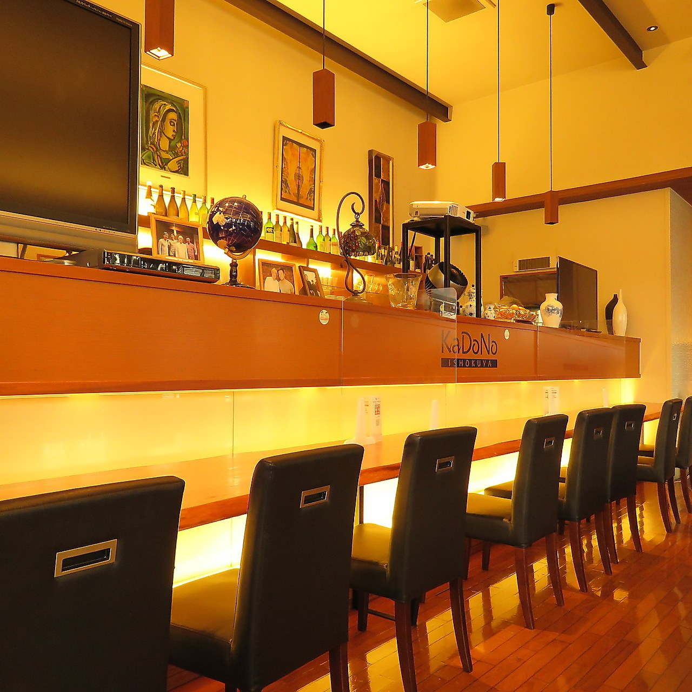
| 営業時間 | 月〜土・祝日・祝前日 11:30〜14:30(料理L.O.14:00、ドリンクL.O.14:00)／17:30〜22:00(料理L.O.21:30、ドリンクL.O.21:30) |
|---|---|
| 定休日 | 日曜、第2月曜(店舗カレンダーあり) |
| 住所 | 広島県福山市沖野上町2-9-25 |
| 予約 | 可(ネット予約は来店当日18時まで、リクエスト予約は前日17時まで) — ☎ 084-944-6005 ／ 公式サイト |
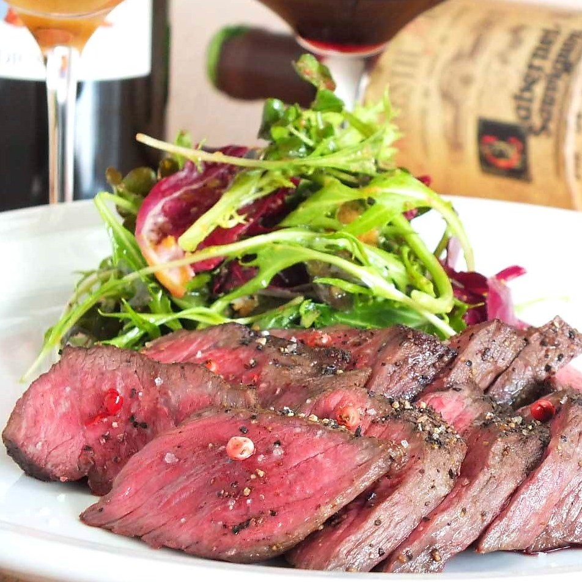
| 営業時間 | 火〜木・日・祝日 11:30〜15:00(料理L.O.13:30)／17:30〜22:00(料理L.O.21:00、ドリンクL.O.21:30)。金・土・祝前日 11:30〜15:00(料理L.O.13:30)／17:30〜23:00(料理L.O.22:00、ドリンクL.O.22:30)。昼は食材がなくなり次第終了 |
|---|---|
| 定休日 | 月曜 |
| 住所 | 広島県福山市三之丸町4-12 |
| 予約 | 可 — ☎ 084-924-5570 |
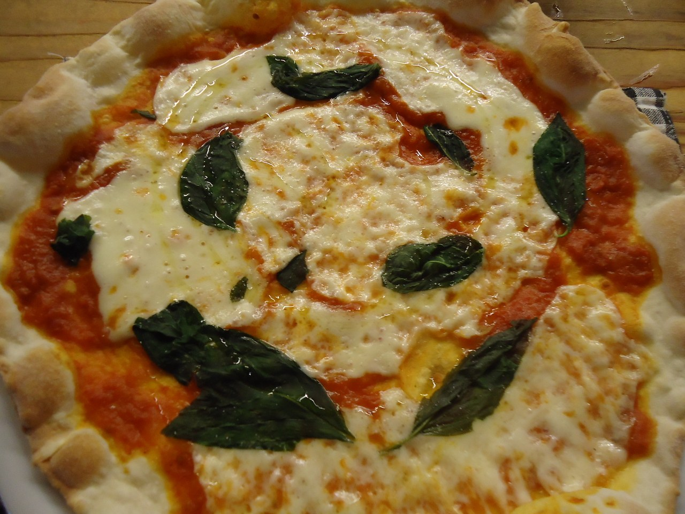
| 営業時間 | 月・火・木〜日 11:00〜21:00(料理L.O.20:30、ドリンクL.O.20:30)。ランチは11:00〜L.O.15:00、ティータイム15:00〜17:00(ケーキと飲み物のみ)、ディナー17:00〜21:00(L.O.20:30) |
|---|---|
| 定休日 | 水曜(祝日は営業し翌木曜休み)、第1・第3・第5木曜 |
| 住所 | 広島県福山市新市町新市322-1 |
| 予約 | 可 — ☎ 0847-51-8768 |
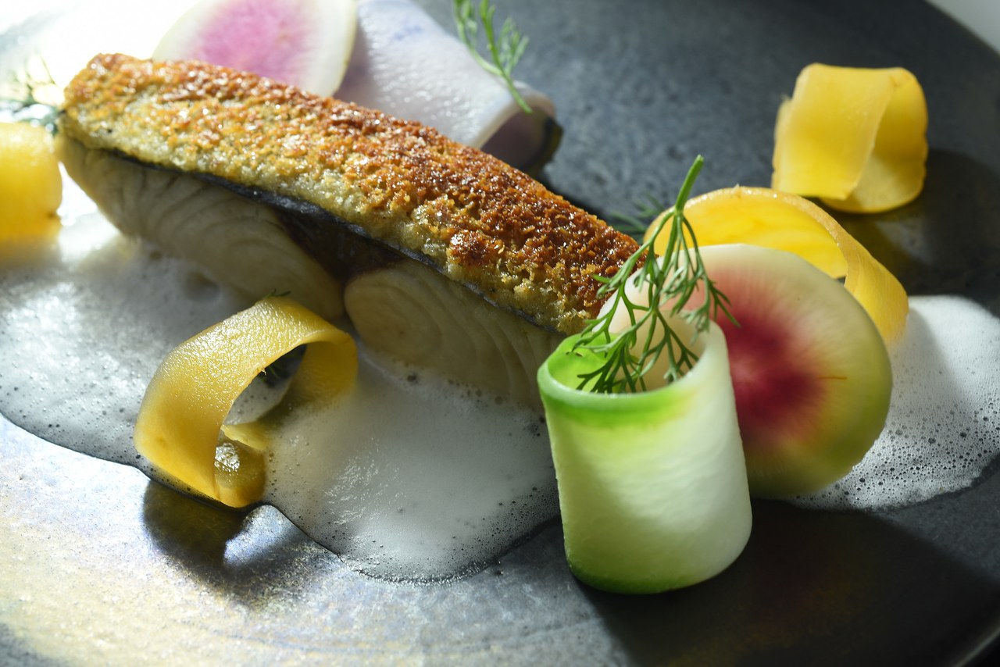
| 営業時間 | ランチ 11:30〜14:00(L.O.13:00)／カフェ 14:00〜16:00(L.O.15:30)／ディナー 18:00〜21:00(L.O.20:00) |
|---|---|
| 定休日 | 木曜、第3水曜 |
| 住所 | 広島県福山市御幸町上岩成455-3 |
| 予約 | 可(フルコースは要予約) — ☎ 084-972-7689 ／ 公式サイト |
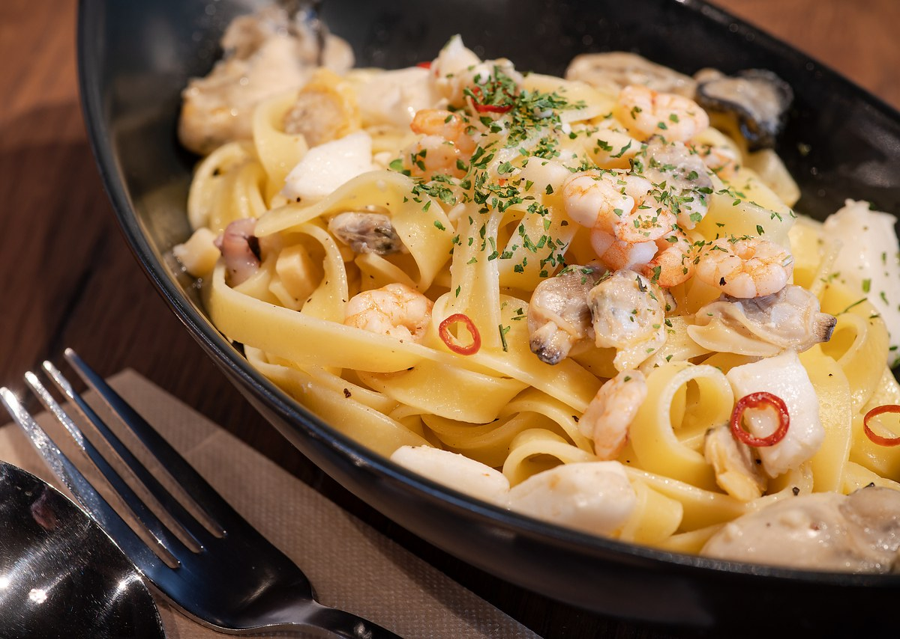
| 営業時間 | 月・水〜金 11:00〜14:00(料理L.O.13:30、ドリンクL.O.13:30)／18:00〜21:00(料理L.O.20:30、ドリンクL.O.20:30)。土・日 11:00〜15:00(料理L.O.14:30)／18:00〜21:00(料理L.O.20:30) |
|---|---|
| 定休日 | 火曜 |
| 住所 | 広島県福山市鞆町鞆435-5 |
| 予約 | 可(ネット予約あり) — ☎ 070-1066-9280 ／ 公式サイト |
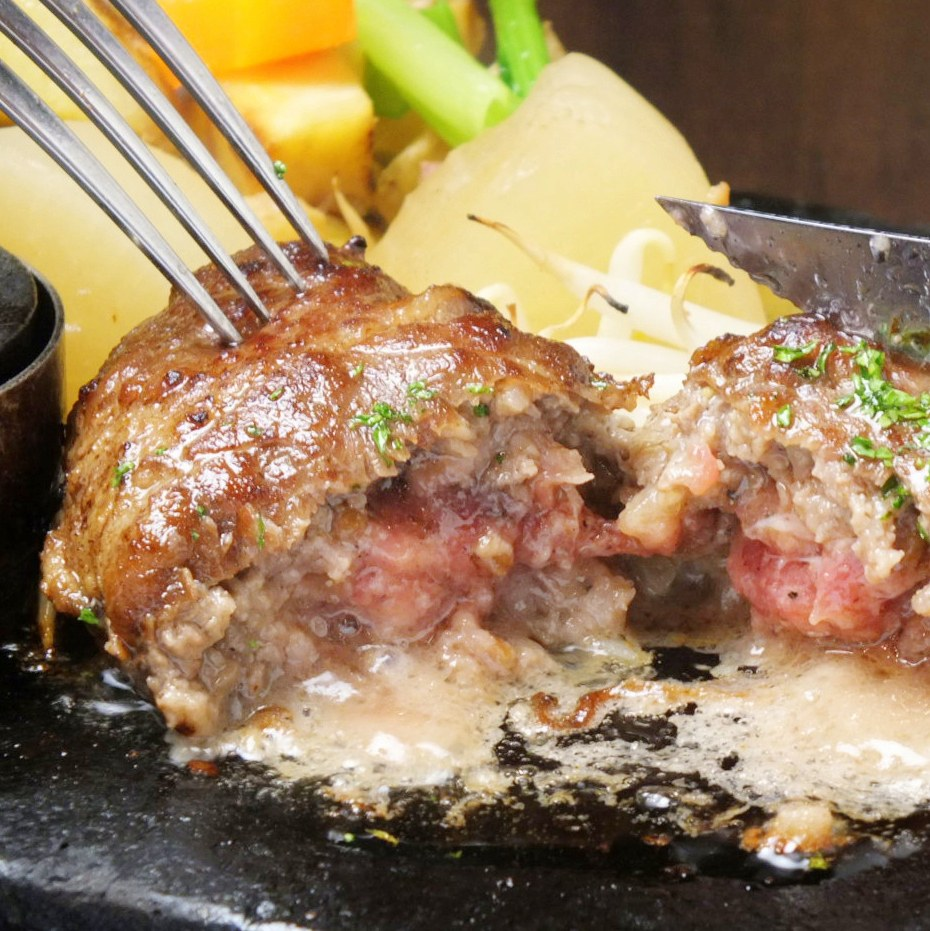
| 営業時間 | 月〜水・金・祝日・祝前日 11:00〜15:00(料理L.O.14:30、ドリンクL.O.14:30)／17:30〜21:30(料理L.O.21:00、ドリンクL.O.21:00)。土・日 11:00〜21:30(料理L.O.21:00)で通し営業、17:30からディナーメニュー |
|---|---|
| 定休日 | 木曜(祝日の場合は営業) |
| 住所 | 広島県福山市西新涯町1-2-31 |
| 予約 | 可 — ☎ 084-954-2592 |
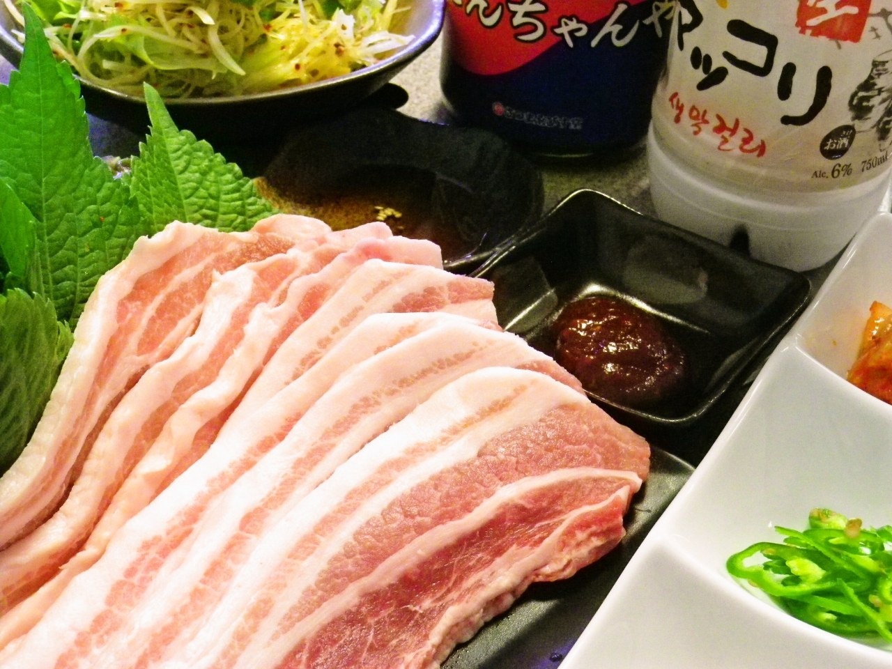
| 営業時間 | 月・水〜日・祝日・祝前日 11:00〜14:30／17:00〜22:00(料理L.O.21:15、ドリンクL.O.21:30) |
|---|---|
| 定休日 | 火曜 |
| 住所 | 広島県福山市松永町6-10-31 2F |
| 予約 | 可 — ☎ 084-934-1231 |
| 営業時間 | 9:00〜19:00（ラストオーダーの表記は公式サイトになく未確認） |
|---|---|
| 定休日 | 火曜日 |
| 住所 | 広島県福山市伏見町4-40 |
| 予約 | 未確認（公式サイトに予約の案内なし） — ☎ 084-926-3363 ／ 公式サイト |
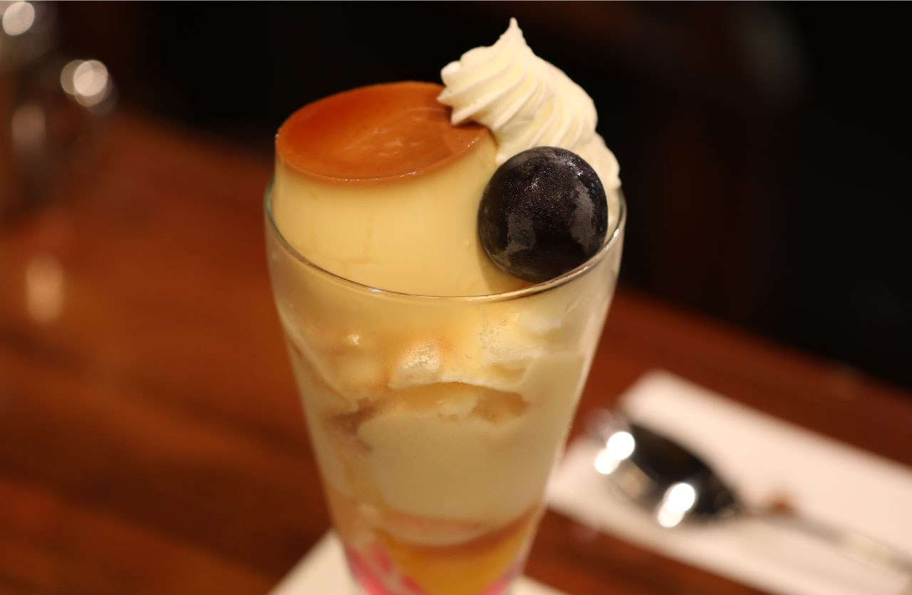
| 営業時間 | 7:30〜20:00（ラストオーダーの記載なし＝未確認） |
|---|---|
| 定休日 | 水曜日 |
| 住所 | 広島県福山市元町12-8 |
| 予約 | 不要（3階の打ち合わせ利用のみ要予約） — ☎ 084-923-1758 ／ 公式サイト |
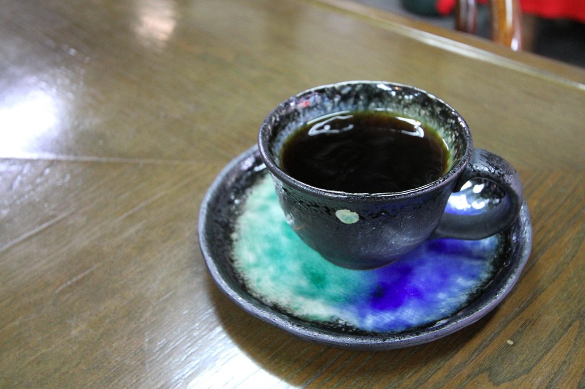
| 営業時間 | 9:30〜17:00（時期により異なる。『鞆物語』の掲載は9:00〜17:00） |
|---|---|
| 定休日 | 火曜日 |
| 住所 | 広島県福山市鞆町鞆852 |
| 予約 | 不要 — ☎ 084-982-1006 |
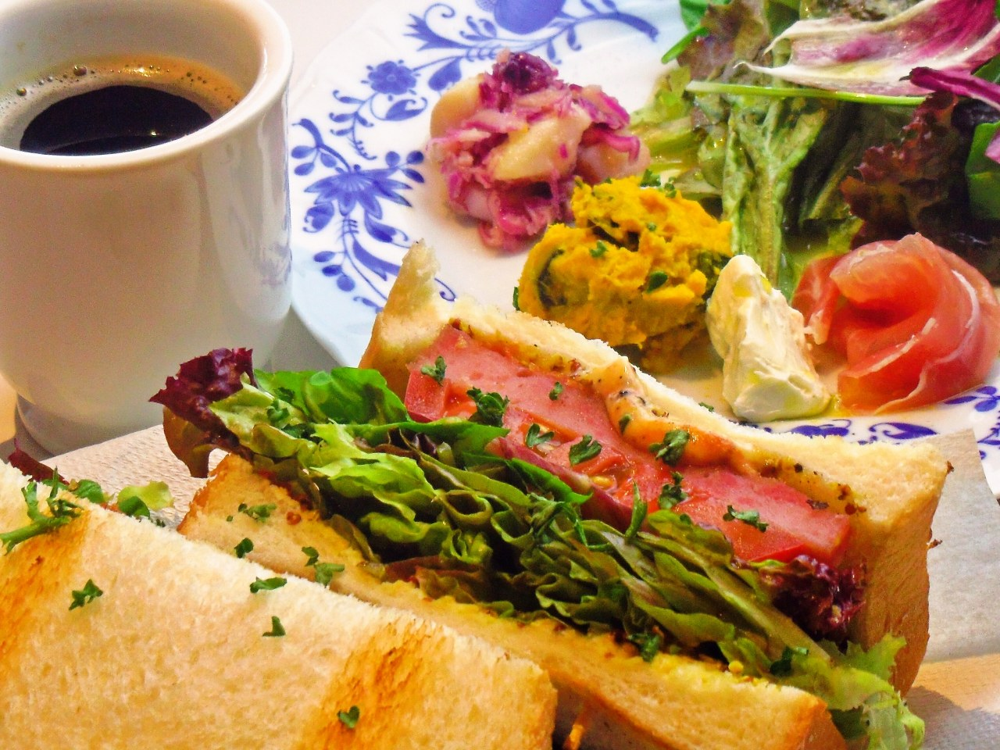
| 営業時間 | 10:00〜18:00（料理ラストオーダー17:30）※『鞆物語』は11:00〜19:30、まっぷるは11:00〜17:00と記載しており情報に幅がある |
|---|---|
| 定休日 | 水曜日（水曜が祝日の場合は木曜） |
| 住所 | 広島県福山市鞆町鞆844-3 |
| 予約 | 一部可（ネット予約は現在受付停止。夜のみ10名以上で貸切可・要相談） — ☎ 084-982-0131 |
| 営業時間 | 月〜土・祝前日 8:00〜15:00／日曜 8:00〜11:30 |
|---|---|
| 定休日 | 祝日 |
| 住所 | 広島県福山市南松永町3-9-20 |
| 予約 | 不要 |
| 営業時間 | 月・水〜金・日・祝 11:00〜18:00（料理L.O.17:00／ドリンクL.O.17:00）、土 11:00〜22:00（料理L.O.21:30） |
|---|---|
| 定休日 | 火曜日 |
| 住所 | 広島県福山市引野町1-15-2 |
| 予約 | 可（ホットペッパーグルメのネット予約と電話） — ☎ 084-999-8780 |
| 営業時間 | 9:30〜17:00（『鞆物語』は「9:00〜夕方」と記載。ラストオーダーの表記はどちらにもなく未確認） |
|---|---|
| 定休日 | 不定休（土曜・日曜は必ず営業） |
| 住所 | 広島県福山市鞆町鞆843 |
| 予約 | 不要 — ☎ 090-8066-7009 |
| 営業時間 | 9:00〜17:00（ラストオーダー16:30）。ランチは11:00〜15:00 |
|---|---|
| 定休日 | 木曜日・金曜日（祝日を除く） |
| 住所 | 広島県福山市箕島町6585 |
| 予約 | 可（公式サイトとホットペッパーグルメのネット予約） — ☎ 084-971-3580 ／ 公式サイト |
本ガイドは個人利用目的で作成。掲載情報は2026年10月時点の調査に基づく。写真出典: 各店の公式サイト・公式SNS、および地域情報サイト等の掲載写真（著作権は各サイト・各撮影者に帰属）。引用元は店ごとにカード内へ明記。